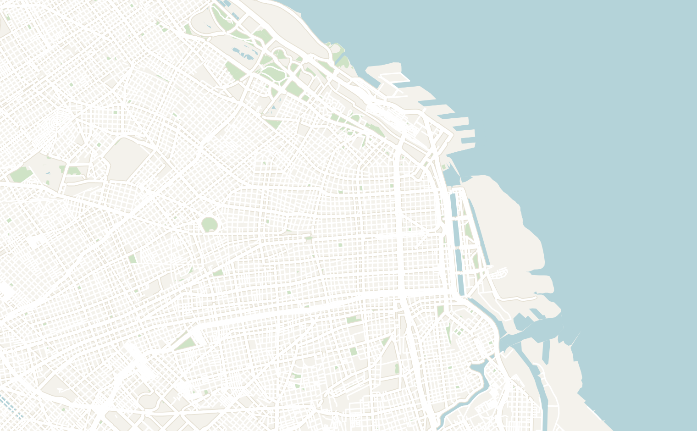
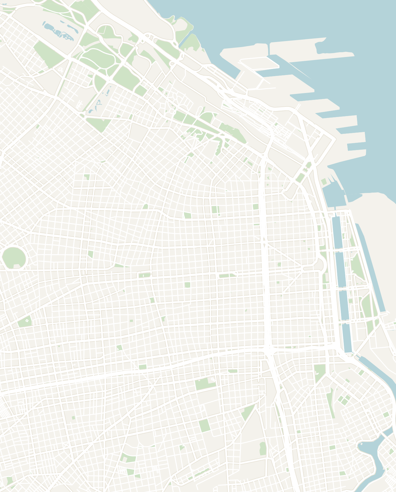

General
Argentina is a country of extremes: the glaciers and granite spires of Patagonia in the south, the thundering Iguazu Falls in the subtropical north, and in between one of the most exciting cities in the world in Buenos Aires. Patagonia is genuinely spectacular and worth the effort to reach; Buenos Aires is one of the most interesting and fun big cities in South America.
Argentina is where European traditions blend with South America, creating a unique culture unlike any other. Argentina is a one-stop destination for all types of travelers: from the grand European architecture in Buenos Aires to the gaucho traditions and wine culture in the countryside to some of the continent's most spectacular landscapes in Patagonia and Iguazu Falls.
For first timers, I would recommend spending 10 to 14 days in Argentina and combine it with a trip to Chile to fully explore the Patagonia region.
- Getting around
- Flights — Argentina is the 8th largest country in the world so the best way to get around is to fly. You'll likely fly into Buenos Aires, capital and heart of Argentina. When flying to Patagonia, the main airport is El Calafate in the north and Ushuaia in the south
- Buses — long-distance buses are comfortable and connect all major towns with shorter shuttles linking the Patagonian towns and trailheads. Book all of your buses on BusBud
- Ridesharing — Uber is widely available and extremely cheap in Argentina. It was my primary way of getting around Buenos Aires and even longer airport rides cost less than $10
- Driving — Argentineans are relatively safe drivers. In particular, I would rent a car in Patagonia as there is little to no traffic here and easy to drive around
- Money — the Argentinean Peso is famous for it's rampant inflation and the country has struggled to maintain the stability of their currency. It can be a bit disorienting as a tourist so you'll want to follow the following guidelines:
- Bring USD to Argentina and you can exchange with local vendors for the "blue dollar" rate. Exchanging for the "blue dollar" rate with street vendors will sometimes get you a rate 1.5x to 3.0x the official exchange rate, making your money stretch a lot further
- Some vendors will refuse to take card so carry cash when you can. ATMs here can cause issues as they often run out of cash before the end of the day, some have insane fees ($8 on a $20 withdrawal) and they all have low daily limits
- Get used to carrying large stacks of cash. When I was there, the most common bill was 1,000 pesos (equivalent to $2 at the time) so every meal would be paid in a huge stack of bills. It seems like they made larger 10,000 and 20,000 pesos bills since so hopefully this relieves the issue
- Food — Argentinean food is one of the great cuisines. With some of the highest quality beef in the world, make sure you have at lease one steak while you're in the country. Other great dishes to have are the asado(the barbecue), choripán(chorizo sandwich), milanesa (fried cutlet) and empanadas, all washed down with Mendoza Malbec
- Nightlife — the country's nightlife in a league of its own and it's hard to even keep up as a foreigner. Argentinians go out harder and much later than anywhere else I've seen. Clubs open at 1am, run until 7am, then afterparties start at 9am
- Safety — Buenos Aires felt very safe in the Palermo, Recoleta and San Telmo neighborhoods. With the decline of the Argentinean economy over recent years, the crime rate has increased so just be careful at night and stick to safer neighborhoods. Puerto Iguazú and Patagonia are some are the safest places in the world so no need to worry about crime there
Buenos Aires
3–4 days recommendedBuenos Aires is perhaps the one of the most famous and grand cities in South America with noticeable European influence. The historic neighborhoods of Recoleta and Palermo feel like Paris with wide tree-lined boulevards, classical architecture and world-class restaurants and cafés. The pace of life in Buenos Aires is relaxing during the day and the nightlife is genuinely in a class of its own.
Spend 3–4 days exploring Buenos Aires. It was fascinating learning about Argentinean culture and the history of how the country was shaped by Italian, Spanish and other European immigrants.
Buenos Aires is a metropolis that sprawls for miles. As a tourist, there are 3 main neighborhoods you want to focus on. From north to south, they are Palermo, Recoleta/Monserrat, San Telmo and La Boca. They are a bit too far to walk so you'll want to take Ubers or public transportation between the different stops. I've organized the activities by different neighborhoods to help you plan your trip:
- Palermo — the best neighborhood to stay in Buenos Aires. It is very walkable and full of great restaurants, bars, parks and shops
- Parque Tres de Febrero — a large and beautiful park built around a lake, known as the lungs of Palermo. Paddle boats on the water, street food vendors along the paths and a relaxed local crowd especially at sunset. Spend an afternoon or evening walking around here
- Avant Garten — located right next to Parque Tres de Febrero is a row of trendy restaurants, bars and creative food spots built under old brick railway arches. Good for a casual dinner or drinks in the evening
- Museo de Arte Latinoamericano de Buenos Aires — one of the best museums in Latin America, housing over 400 works of modern and contemporary Latin American art. The permanent collection includes works by Frida Kahlo, Diego Rivera and other major 20th century Latin American artists. There is also a rooftop terrace, cinema and cafe on site. It takes about 2 hours to fully explore
- Costa Rica Street — one of the best streets in Palermo for a night out, lined with restaurants, wine bars and cocktail spots. A popular area for locals to hangout
- Recoleta & Monserrat — the two most historic neighborhoods in Buenos Aires, located right besides each other. Recoleta is the elegant, Paris-inspired quarter while Monserrat is the oldest neighborhood and political heart of the city
- Recoleta Cemetery — it might feel strange to visit a cemetery on vacation, but Recoleta Cemetery has some extremely impressive mausoleums and tombs to visit. The cemetery has a distinctly avantgarde Italian style. You'll see a vast array of tombs ranging from small tombs to miniature Roman buildings, many with grand statues, busts and photos of the dead. It is worth an hour to explore and you can even get a tour to learn about the famous Argentineans buried here
- El Ateneo Grand Splendid — an old theater converted into a bookstore, with ornate railings, tiny lights and the original stage. It is the most impressive bookshop I've been in
- Café Tortoni — the oldest café in Argentina opened in 1858. The interior is frozen in time and it has been a gathering spot for Argentine intellectuals, artists and politicians for over 160 years. Get a cortado and a plate of churros with hot chocolate
- Plaza de Mayo — the political and historical heart of Buenos Aires, founded in 1580. Every major event in Argentine history has happened here, from the May Revolution of 1810 to Eva Perón's famous speeches from the balcony of Casa Rosada. The square is still very much alive; you will often find protesters camped out around the Pirámide de Mayo at the center
- Catedral Metropolitana de Buenos Aires — the neoclassical cathedral on the north edge of the square, home to the tomb of General José de San Martín, Argentina's liberating hero. Impressive interior with gilded altars and high vaulted ceilings
- Museo Nacional del Cabildo — the colonial-era town hall on the west edge of the square, one of the oldest buildings in Buenos Aires. There is a small museum covering the May Revolution and colonial history. Worth a quick stop
- Casa Rosada — the famous pink presidential palace on the east edge of the square. Free guided tours of the interior are available on weekends
-
San Telmo — Buenos Aires' bohemian neighborhood, with cobblestone streets, colonial architecture, antique shops and tango venues around every corner
- Mercado de San Telmo — a stunning 1897 indoor market hall with a glass roof open daily with gourmet food vendors, coffee roasters, antique dealers and vintage record shops. I went here multiple times to eat and it was one of my favorite places in the city
- San Telmo Sunday Street Fair — every Sunday, the indoor market spills out onto Calle Defensa for over 10 blocks and transforms into one of the largest outdoor markets in the world. There are hundreds of vendors selling antiques, handmade crafts and art, street tango performers and live music. One of the best things to do in Buenos Aires on a Sunday
- La Boca — the most colorful and chaotic neighborhood in Buenos Aires. Worth a half day to wander around. Make sure to stick to the tourist area during daylight hours, beyond the main streets it is one of the rougher neighborhoods in Buenos Aires
- El Caminito — the famous pedestrian street lined with bright rainbow corrugated-metal buildings and Messi murals. It is a super lively neighborhood located right next to the river. There are tango dancers performing on the sidewalk and food and souvenir stalls everywhere
- La Bombonera — the legendary home stadium of Boca Juniors, one of the most passionate football clubs in the world. The stadium is famous for its unique box shape and the sheer noise the fans generate inside. Worth walking past the exterior and checking out the museum even if you can't get match tickets
- Mi Tío Pizzería (San Telmo) — a tiny mom-and-pop near the San Telmo market. The restaurant serves very authentic Italian food. The gnocchi in a loose tomato sauce loaded with slow-stewed beef was the owner's recommendation and simply amazing
- Dandy — an upscale Argentinian chain with a few location throughout the city. It is good for a lighter meal if you want to take a break from the Argentinian steaks
- Parrilla Del Carmen — a no-frills outdoor grill spot popular among locals. They had an incredible asado during the San Telmo Sunday Street Fair
- Choripán — you can find these available in almost any part of Buenos Aires. These are chorizo sandwiches often served with Chimichurri sauce. These were an amazing everywhere I went from street vendors to restaurants
- Crobar Club — one of the best clubs in Argentina and an unforgettable experience. It opens at 1am and doesn't get packed until later. The techno here was elite with a really cool LED display. The place is completely packed until 7am when Argentinians head to afterparties
- Viajero Buenos Aires — a solid hostel option in the centrally located neighborhood of Monserrat. Since nightlife runs extremely late in Argentina, be prepared for people to come in your dorm at very late hours like 5AM or 7AM
- If you're looking for your own space, there are plenty of Airbnbs and hotels that run extremely cheap in Buenos Aires. I found a great Airbnb apartment in the neighborhood of Palermo for only ~$24/night


Double-tap to open in Google Maps
El Calafate
1–2 daysEl Calafate is a lakeside Patagonian town that exists mainly for one staggering sight: the Perito Moreno Glacier. Most people come for a day or two, see the glacier, and move on to El Chaltén as there isn't much to do in this town.
One of the few glaciers in the world that is still advancing rather than retreating, Perito Moreno is part of the Southern Patagonian Ice Field, the third largest freshwater reserve on the planet after Antarctica and Greenland. The glacier's face is 5km wide and rises up to 74 meters above the lake surface, with another 700 meters of ice hidden below the waterline.
- Perito Moreno Glacier — about 1.5 hours from town, you can take a private taxi (~100k pesos) or public transport to one of the largest glaciers in the world. It is an impressive site to behold and the entire surface area of Perito Morenois larger than the city of Buenos Aires. Watch for calving: a loud gunshot crack, a chunk falling, slow waves rolling out, and the flipped ice glows a brilliant blue color while floating in the water. There are a few ways to visit the glacier:
- Perito Moreno Glacier Walkways — there are metal walkways color-coded by route where you walk alongside the massive glacier and admire it from a distance. The yellow track takes you closest to the base, where the glacier wall stands perfectly straight with enormous spiky blue towers, sandwiched between two black mountains. Entry costs around $30 USD or 45,000 ARS for foreign visitors
- Minitrekking —you can even walk on top of the glacier with a Minitrekking tour. It lasts a total of 1.5 hours on the glacier with crampons, includes a boat ride to the starting point and a whisky on the rocks with glacier ice at the end. Expect to pay around $350 USD, not including park entry
- Helicopter tour — the best way to grasp the true scale of Perito Moreno. The helicopter flight takes you over the full 30km length of the glacier and the surrounding ice field, revealing deep blue crevasses and rivers of ice impossible to see from the walkways. Around 20–30 minutes in the air, ~$400–500 USD. Book in advance and be prepared for weather cancellations
- Kayaking — the most intimate way to experience the glacier, putting you at water level among the icebergs that have calved off the face. The tour lasts 1 - 2 hours on the water in double kayaks close enough to the glacier wall to feel the cold radiating off it. No experience required and a dry suit provided. Around $250 USD including transport from El Calafate
- Explore the Charming Downtown — El Calafate is a surprisingly pleasant small town and worth a few hours of wandering after the glacier. The main street, Avenida del Libertador, is lined with restaurants serving traditional Argentinean food. The local special is the cordero patagónico which is Patagonian lamb slow-roasted gaucho-style
- Big Pizza — a surprising spot where I found some of the best value empanadas. I tried the carne suave, spicy carne, onion-and-cheese and cheeseburger for only ~950 pesos or $1 each
- América del Sur Hostel — a ski-lodge-style hostel with a massive common area, floor-to-ceiling windows overlooking the lake and mountains, a fireplace and a bar. It was one of the best hostels I've ever stayed at with an excellent steak dinner served with red wine and live music
El Chaltén
2–3 days recommendedEl Chaltén is a tiny town of 5,000 founded in 1985. There is basically main street where every building is a seasonal business serving tourists. It's Argentina's trekking capital and the base for the iconic Mount Fitz Roy hike.
I would recommend spending 2 to 3 days here to explore amazing hikes here. The hikes here rival the W Trek that I did in Torres Del Paine on the Chilean side of Patagonia.
- Laguna de los Tres / Fitz Roy hike (~15 miles / 24 kilometers round trip) — prepare for a long hiking day and one of the most incredible hikes of your life! I would highly recommend an early start to catch the famous sunrise and mountains (Mt Fitz Roy) that inspired the Patagonia logo
- I woke up at 5:30am and hiked in the dark with a headlamp for a couple hours. It starts with an easy stretch through town and then an ascent to the Mirador del Fitz Roy. Rest here and catch the spectacular sunrise that glowed miraculous shades of orange and purple
- The hike continues on through a stunning valley with red autumn foliage, streams, marshes and Fitz Roy always in view.
- The last stage is a 2km ascent up a steep, loose, near-vertical rock size, so take it slow. At the top, Laguna de los Tres is brilliant blue beneath the mountain, with wind so strong I couldn't even hold my phone upright. You hike back the same way from here.
- It was an extremely long day, but worth every second. Unlike many popular trails, I didn't see very many other tourists which was refreshing. Here is the AllTrails link for the exact route
- Mirador de los Cóndores (Condor Lookout) — if you're looking for an easy hike before or after the Fitz Roy hike, Mirador de los Cóndores is a great candidate. It is a short 3 mile hike up a short hill at the edge of town. It is a great spot to go for sunset and spot condors circling overhead, with views over the whole little town below
- Bourbon Smokehouse — one of the more popular restaurants in town. They serve classic Patagonia fare. The cordero (lamb) is an enormous pile of ribs, meat and potatoes and there is a cheap happy-hour here as well
- Lomolito — the best place to enjoy the Argentine classic lomo-saltado steak sandwich with fries
- La Diadema — a fancy restaurant located right next to my hostel. It was nearly empty when I went, but the food was delicious
- Banneton — the main coffee shop on the main street and the best breakfast or rest-day stop
- Aylen Aike Hostel — a cozy hostel with a small dining table and common area. Most people here head out on hikes during the day and the hostel comes alive at night. You'll meet almost everyone staying here since it is very close quarters and maybe meet a hiking buddy for the next day
Make sure to read my field notes on the Chilean side of Patagonia here.
Iguazu Falls
2 days recommendedIguazu Falls is one of the most incredible waterfalls in the world, surrounded by lush jungle making you feel like you're in Jurassic Park or Avatar. It is no surprise that it is one of the seven natural wonders of the world. The waterfalls are so massive that they're actually located in 3 countries: Brazil, Argentina and Paraguay.
The best way to visit it is to spend 1 day on the Brazilian side and 1 day on the Argentinian side which each offer a different experience. It is very easy to cross the border, you just can take a cheap, local bus from one side to the other.
- Brazilian side: there are walkways through the forest to platform views of the falls from a distance. The falls stretch for miles side by side. The upper river flows peacefully then drops dramatically. The surrounding forest feels like Avatar. The waterfalls are famous for the biodiversity and is home to hundreds of species of tropical birds
- Argentinian side: take a boat tour here! They drive the boat directly into the falls and ram the boat into the water wall multiple times. It'll feel like a rollercoaster where you get completely soaked and shake water out of your sleeves afterwards. Bring a poncho and your GoPro
How to get there — both the Brazilian side and Argentinean side have airports with regular flights to Rio, São Paulo and Buenos Aires. These flights are very affordable, roughly $30-$40 if you book in advance. It is significantly cheaper to fly to the airport on the side of the country that you're already in.
If you have an extra day, also take a day trip to Ciudad del Este in Paraguay. It is quite an odd city, a popular spot for Brazilians and Argentineans to buy tax-free electronics (yes, random I know). The city is loaded with Chinese electronics stops. Visit some of the historic sites (El Mensu History Museum and Catedral San Blas) and stop by Maru Cafe for a traditional Paraguayan meal.
You can get there by public bus. Depending on where you start, the will cross through the borders of Argentina, Brazil and Paraguay. Citizens of these cities are able to freely cross the borders. However, Foreigners are required to ask the bus drivers to stop. The bus doesn't automatically stop so make sure you ask the driver. Don't make the same mistake as me and accidently illegally cross the border...
- I flew into the airport on the Brazilian side and decided to stay in the town of Puerto de Iguazu in Argentina. From the Brazilian airport, it was a simple public bus ride and quick border checkpoint to cross the border. The town of Puerto de Iguazu in Argentina has a lot more tourism infrastructure, restaurants and is the best place to base yourself in the area
- Tucan Hostel - one of my favorite hostel experiences. The hostel itself was very basic, but was very social and a great place to stay. I met some absolutely amazing people from all over the world and the host named Mariel was extremely friendly. Once a week, they host an absolutely legendary Asado (the weekly Argentinian tradition of having a family barbeque) complete with steak, blood sausage, pork ribs, chicken, chimichurri sauce and red wine
Other Places to Consider
Argentina is the 8th largest country in the world so there are plenty more places that I didn't have the time to explore:
- Mendoza — the heart of Argentine wine country at the foot of the Andes. Spend a day cycling between Malbec vineyards and sampling world-class wines
- Bariloche — an alpine, Swiss-feeling town in the Lake District, famous for its lakes, chocolate and hiking. It is the unofficial gateway to Argentina's northern Patagonia
- Ushuaia — the southernmost city in the world at the tip of Tierra del Fuego, the "End of the World" and the main departure port for Antarctica
- Salta — a completely different Argentina with red-rock canyons, high-altitude desert, colonial towns and the winding Quebrada de Humahuaca valley